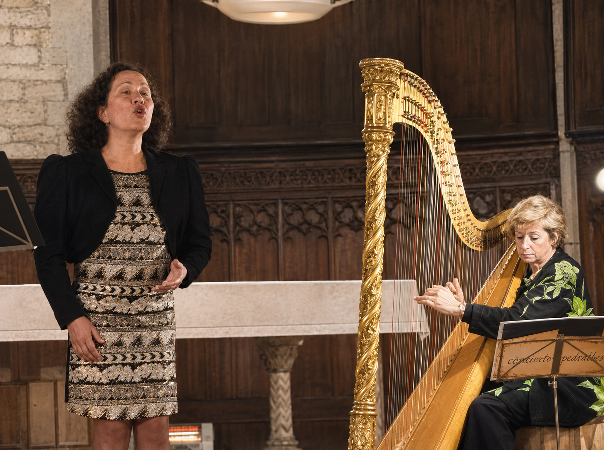
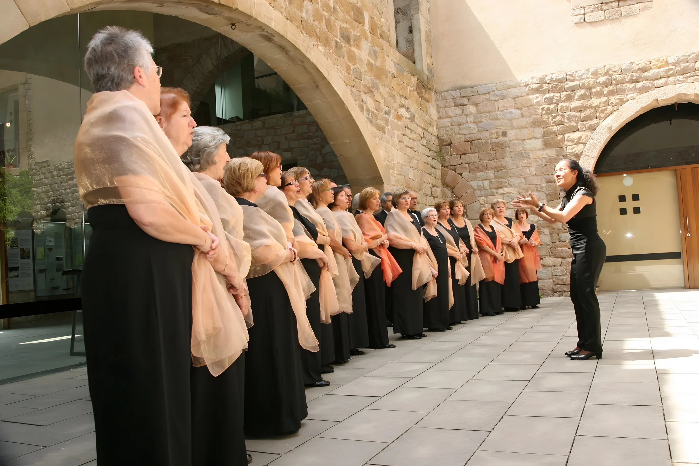
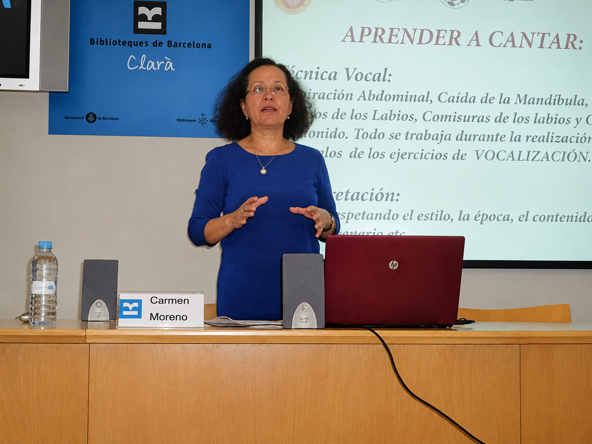

Una hora
Mitja hora de vocalització i mitja aplicant el que s’ha treballat a la teva obra.

Programes de classe
Classes individuals per a qui comença, per a coralistes, per a professionals del cant i per als qui treballen amb la veu. En línia des de qualsevol país o presencials a Barcelona.
«L’accés a l’estudi de la tècnica vocal no estableix límits d’edat ni de formació acadèmica: només el somni de millorar la manera de cantar.»Carmen Moreno
01 · Des de zero
Per a qui vol conèixer les bases del cant i aplicar-les des del principi al seu repertori.
Tot es treballa durant la vocalització, observant bé com s’executa cada interval, perquè són els mateixos intervals que després cantaràs a les obres. «Desenvolupada l’habilitat tècnica, el sentir intern s’apodera i imprimeix a l’obra un caràcter personal i únic.»


02 · Corals
Per a cantants de coral que necessiten ajuda tècnica per estudiar i preparar les obres que assaja la seva agrupació.
La Carmen dirigeix corals des de 1999 i sempre ha treballat cada coralista «amb la mateixa tècnica i qualitat vocal exigida a un solista en un conservatori». En aquestes classes portes la teva partitura i treballeu juntes els passatges que et costen: l’afinació de la teva línia, els salts, les notes llargues i les entrades.
03 · Solistes
Per a professionals lírics i estudiants avançats amb esperit de superació contínua que volen corregir «resultats no desitjats», en coneguin o no la causa.
Quins detalls tècnics ja domines i quina és la causa de les errades que descrius.
Els exercicis amb els intervals que corregeixen aquesta causa.
Portar la comprensió als mateixos intervals de l’obra i comprovar fins on ha arribat.
De vegades n’hi ha prou amb una vocalització ben assistida. D’altres vegades l’objectiu és explorar més possibilitats vocals i assegurar el registre i la tessitura, sense saltar-se els propis límits naturals.
La base tècnica és la mateixa que a la lírica. Per mantenir l’estil, les comissures no s’exigeixen tan properes i la pressió de suport és menys exigent: amb un bon ús de la musculatura costal, l’intèrpret manté el seu fraseig. Si després vol passar a la lírica, només cal completar aquests detalls.


04 · Veu de feina
Per a docents, locutors i altres professionals que parlen tot el dia i necessiten comprendre les bases tècniques que mantenen sa el seu aparell fonador.
Aprendràs la respiració abdominal i els moviments de protrusió i de col·locació del so. Així la teva veu es projecta sense irritar les cordes vocals i arribes al final de la jornada sense cansament ni ronquera.
Sol·licita aquest programaFormats
Les classes poden ser intensives o extensives. El dia i l’hora s’acorden amb la Carmen segons la disponibilitat de tots dos.
Mitja hora de vocalització i mitja aplicant el que s’ha treballat a la teva obra.
Més temps per vocalitzar amb calma i portar la feina a una obra.
Un seguiment mensual amb progressió constant. És l’opció més habitual.
Un diumenge a la tarda (hora d’Espanya), oberta a qui vulgui participar, segons les sol·licituds rebudes.
De dilluns a dissabte, a partir de les 10:00. Els diumenges, en casos especials.
En línia des de qualsevol país o presencial a Barcelona.
Transferència o targeta. Si vius fora de la Unió Europea, la Carmen t’indicarà les opcions en la teva moneda local.
Tarifes i disponibilitat actual, a consultar amb la Carmen.
Abans de començar
No saps quin programa triar? Fes el test de quatre preguntes o escriu a la Carmen i t’orientarà.
Un espai on puguis cantar sense molestar ni ser molestat, un ordinador o tauleta amb càmera i micròfon i una connexió estable. Si treballes una obra, tingues la partitura a mà: la Carmen també te la pot mostrar en pantalla.
Sí, i és el més recomanable. La tècnica es treballa en la vocalització i s’aplica als mateixos intervals de les obres que estàs cantant.
A més de la sessió oberta dels diumenges, la Carmen ha impartit tallers de tècnica vocal per a grups de cambra i conferències en centres cívics i biblioteques. Escriu-li per estudiar el teu cas.
Avisa la Carmen amb antelació per buscar una altra data. Les condicions concretes de canvis i cancel·lacions te les indicarà quan confirmi la classe.
La teva primera classe
Explica a la Carmen què vols cantar i què et costa. Et proposarà un punt de partida i un horari que encaixi amb tu, en línia o a Barcelona.